Salto Fantasma
|

|
| Elemento |
Energia |
| Usuários |
Rubens Naluti, Yuki |
"O caos abre caminhos."
O usuário é envolvido por ruídos de Energia semelhantes à estática de uma televisão.
Efeito
- Gasta 3 PE
- Teleporta até 9 metros
Aprimoramentos
- +1 PE → alcance de 30 metros
- +2 PE → usar como reação
- +1 PE → levar outro indivíduo